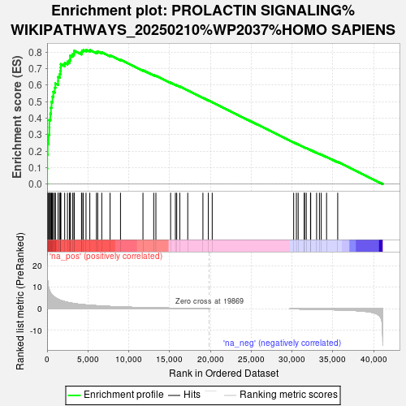
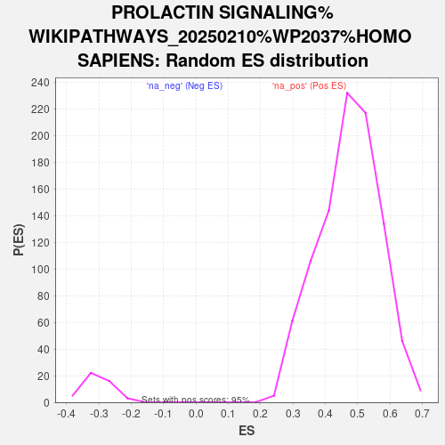

| | | Dataset | DS_vs_CTR_ranked_genelist |
| Phenotype | NoPhenotypeAvailable |
| Upregulated in class | na_pos |
| GeneSet | PROLACTIN SIGNALING%WIKIPATHWAYS_20250210%WP2037%HOMO SAPIENS |
| Enrichment Score (ES) | 0.8149638 |
| Normalized Enrichment Score (NES) | 1.7191052 |
| Nominal p-value | 0.0 |
| FDR q-value | 0.0013379327 |
| FWER p-Value | 0.021 |
Table: GSEA Results Summary

Fig 1: Enrichment plot: PROLACTIN SIGNALING%WIKIPATHWAYS_20250210%WP2037%HOMO SAPIENS
Profile of the Running ES Score & Positions of GeneSet Members on the Rank Ordered List
| SYMBOL | RANK IN GENE LIST | RANK METRIC SCORE | RUNNING ES | CORE ENRICHMENT | | 1 | RPS6KA2 | 10 | 17.162 | 0.0928 | Yes |
| 2 | SOCS3 | 17 | 15.938 | 0.1791 | Yes |
| 3 | MAPK3 | 70 | 12.715 | 0.2468 | Yes |
| 4 | PRLR | 178 | 9.929 | 0.2981 | Yes |
| 5 | SOS1 | 275 | 8.659 | 0.3427 | Yes |
| 6 | JUN | 277 | 8.649 | 0.3896 | Yes |
| 7 | STAT3 | 404 | 7.517 | 0.4273 | Yes |
| 8 | PXN | 471 | 7.111 | 0.4642 | Yes |
| 9 | PIK3R2 | 547 | 6.709 | 0.4988 | Yes |
| 10 | ITGB1 | 661 | 6.250 | 0.5300 | Yes |
| 11 | NFKBIA | 761 | 5.895 | 0.5595 | Yes |
| 12 | RELA | 938 | 5.327 | 0.5841 | Yes |
| 13 | MAPK1 | 1016 | 5.107 | 0.6099 | Yes |
| 14 | FYN | 1347 | 4.434 | 0.6260 | Yes |
| 15 | CBL | 1349 | 4.432 | 0.6500 | Yes |
| 16 | RAF1 | 1556 | 4.071 | 0.6670 | Yes |
| 17 | VAV1 | 1629 | 3.952 | 0.6867 | Yes |
| 18 | ERBB2 | 1663 | 3.904 | 0.7071 | Yes |
| 19 | MAPK14 | 1681 | 3.881 | 0.7277 | Yes |
| 20 | MAP2K1 | 2155 | 3.329 | 0.7343 | Yes |
| 21 | MYC | 2499 | 3.012 | 0.7422 | Yes |
| 22 | CASP3 | 2746 | 2.825 | 0.7516 | Yes |
| 23 | FLNA | 2837 | 2.769 | 0.7644 | Yes |
| 24 | STAT5B | 2840 | 2.768 | 0.7794 | Yes |
| 25 | EIF4EBP1 | 3115 | 2.566 | 0.7866 | Yes |
| 26 | STAT1 | 3296 | 2.451 | 0.7955 | Yes |
| 27 | SHC1 | 3325 | 2.429 | 0.8080 | Yes |
| 28 | VAV2 | 4216 | 2.014 | 0.7973 | Yes |
| 29 | SRC | 4270 | 1.995 | 0.8068 | Yes |
| 30 | SOCS2 | 4439 | 1.921 | 0.8131 | Yes |
| 31 | GRB2 | 4767 | 1.811 | 0.8150 | Yes |
| 32 | RPS6 | 5234 | 1.659 | 0.8126 | No |
| 33 | IRS1 | 6046 | 1.449 | 0.8007 | No |
| 34 | GAB2 | 6201 | 1.414 | 0.8046 | No |
| 35 | PPIB | 6697 | 1.283 | 0.7995 | No |
| 36 | CISH | 7716 | 1.085 | 0.7806 | No |
| 37 | RPS6KB1 | 8993 | 0.878 | 0.7543 | No |
| 38 | RAC1 | 11745 | 0.568 | 0.6904 | No |
| 39 | NFKB1 | 13063 | 0.469 | 0.6609 | No |
| 40 | FOS | 13329 | 0.441 | 0.6568 | No |
| 41 | PTPN1 | 15132 | 0.313 | 0.6146 | No |
| 42 | ZAP70 | 15719 | 0.264 | 0.6018 | No |
| 43 | PTPN6 | 15882 | 0.251 | 0.5992 | No |
| 44 | JAK1 | 16256 | 0.220 | 0.5913 | No |
| 45 | YWHAZ | 17231 | 0.149 | 0.5684 | No |
| 46 | MAPK8 | 19091 | 0.033 | 0.5233 | No |
| 47 | NFKBIB | 19753 | 0.004 | 0.5072 | No |
| 48 | PRL | 20229 | 0.000 | 0.4956 | No |
| 49 | MAPK9 | 30209 | -0.024 | 0.2527 | No |
| 50 | SOCS1 | 30542 | -0.040 | 0.2449 | No |
| 51 | SIRPA | 30760 | -0.054 | 0.2399 | No |
| 52 | GSK3B | 31508 | -0.103 | 0.2222 | No |
| 53 | YWHAG | 31532 | -0.104 | 0.2222 | No |
| 54 | MTOR | 31751 | -0.121 | 0.2176 | No |
| 55 | MAP2K2 | 32270 | -0.162 | 0.2058 | No |
| 56 | PTPN11 | 32296 | -0.164 | 0.2061 | No |
| 57 | AGAP2 | 33017 | -0.223 | 0.1898 | No |
| 58 | PAK1 | 33364 | -0.259 | 0.1828 | No |
| 59 | PIK3R1 | 33583 | -0.279 | 0.1790 | No |
| 60 | HRAS | 34239 | -0.359 | 0.1650 | No |
| 61 | NEK3 | 35604 | -0.470 | 0.1343 | No |
Table: GSEA details [plain text format]

Fig 2: PROLACTIN SIGNALING%WIKIPATHWAYS_20250210%WP2037%HOMO SAPIENS: Random ES distribution
Gene set null distribution of ES for PROLACTIN SIGNALING%WIKIPATHWAYS_20250210%WP2037%HOMO SAPIENS